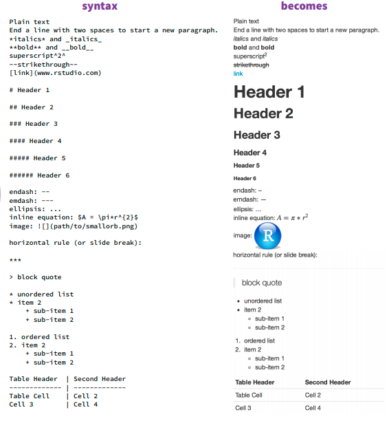

---
title: "Lab 1: Intro to R, RStudio, and Quarto"
author: "Justin Baumann"
format:
html:
toc: true
pdf:
toc: true
number-sections: true
colorlinks: true
editor: visual
---Using Quarto
Learning Objectives
1.) Understand the purpose of a quarto document / any markdown file
2.) Learn the basics of Quarto document formatting
3.) Build a simple Quarto document!
Using Quarto
Quarto is a report building software that is integrated into RStudio. It replaces RMarkdown, if you have used that in the past, and is usable with python, julia, and R. Thus, learning it is a transferable skill. Quarto is designed to allow you to easily write documents that integrate text, hyperlinks, code, and images into a one neat file. This website, for example, is made entirely in Quarto! Quarto documents, or markdown documents as they are more generically known, are common in data science. these documents are great for courses, as you can do your programming, share your code, results, figures, stats, and explanations all in one document. Instead of the instructor downloading your code and running it line by line, we can see the results of the code you write just below the code itself! Super nice for assessing work. Plus, Quarto documents will not render unless the code is error free, so this is a nice way for students to check their own work.
Beyond course use, Quarto and markdown is excellent for creating professional looking data driven reports as well as online resources (like this website :) ). Learning Quarto is a great skill for anyone interested in programming, data, or the sciences! So, let’s learn how to use it!
To make a Quarto document
click file -> new file -> Quarto document / Complete the pop up prompts and then wait for the document to load. / We want to replace the top bit (our YAML header, everything between the two lines that contains just — at the top) with the following (use your name and title!)
Formatting text
Unlike in a regular R script, using the ‘#’ at the start of a line will not comment that line out. Instead, you can type as you would normally in an R Markdown (Rmd) document. We can format our text in the following ways:
 Bold: ‘’ on either end of a word, phrase, or line will make it bold! this is in bold** =’‘this is in bold’’ without the quotes around the **
Line breaks: DO you want text to be on different lines? Insert a ’’ at the end of a line to make a line break!
Making a code chunk
Since qmd documents are text based, we need to tell RStudio when we want to actually include code. To do this, we will insert a code chunk. To insert a code chunk:
1.) Use the keyboard shortcut ‘ctrl’+‘alt’+‘i’ (PC) or ‘cmd’+‘alt’+‘i’ (Mac) to insert a code chunk.
2.) Navigate to the top bar (of the top left quadrant of RStudio), find “+c” at the right of the bar to insert an R code chink.
Once you have a code chunk inserted you will notice that the background of the chunk is gray instead of your default background color (white or black if you are in dark mode)
#this is an example code chunk
# Using '#' at the start of a line indicates a comment, which is not runnable code!Rendering your report
To Visualize what your report will look like, click the ‘visual’ tab in the top bar (on the left). Note that if you do this, it CAN change your code–so be careful. You can also use the GUI to alter your report in the visual tab. This provides a nice alternative to the code based formatting options in the ‘source’ tab.
To actually render into an html or pdf document, you must click “Render”. You can use the arrow to the right of “Render” to choose render to html or render to pdf. I suggest using HTML most of the time but you can use pdf if you prefer. You will need to successfull Render your quarto document into an html or pdf report in order to turn in your labs! :::
website_code - Using Quarto website_code - Using Quarto website_code - Using Quarto website_code